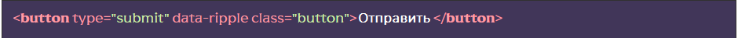

Подключение
[HTML] К любому объекту добавьте дата атрибут data-ripple
[SCSS] В файле src/scss/base.scss раскомментируйте строку @import “base/ripple”; Файл src/scss/base/ripple.scss содержит нужные стили для эффекта. Эти стили можно изменять под себя, например время анимации:

[JS] в файле src/js/app.js раскомментируйте строку flsFunctions.rippleEffect();